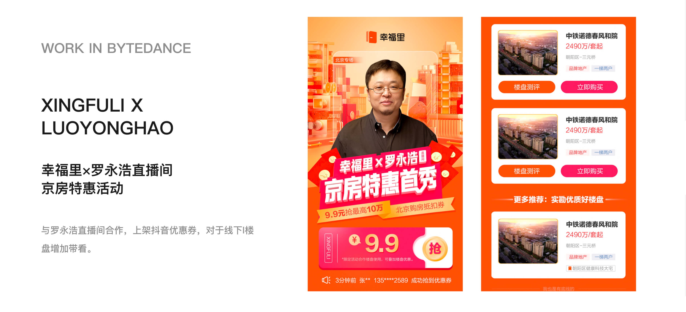
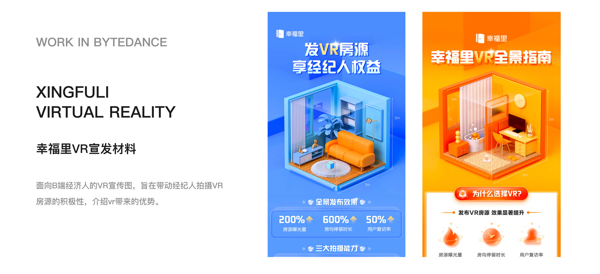
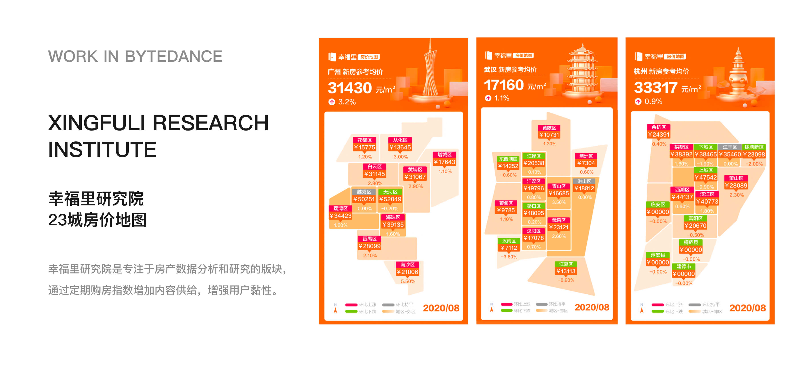

工作概览
时间与类型
时间周期：2020.04 - 2021.09
工作类型：营销视觉设计
我的角色
营销视觉设计师
3D视觉设计师
工作背景
以 C4D 设计能力作为核心切入点，承担3D视觉内容的设计与输出，补充团队在3D风格方向的设计能力，与插画风格设计形成互补。
时间周期：2020.04 - 2021.09
工作类型：营销视觉设计
营销视觉设计师
3D视觉设计师
以 C4D 设计能力作为核心切入点，承担3D视觉内容的设计与输出，补充团队在3D风格方向的设计能力，与插画风格设计形成互补。
作为团队3D视觉设计师，负责建立统一的3D视觉素材库，沉淀可复用的视觉资产，提升团队整体设计效率与一致性。
C端方向：主要负责大型购房节等重点活动页面设计及整体视觉包装，支持业务节点的流量转化与活动传播，并通过数据反馈优化视觉表现。
B端方向：负责面向经纪人群体的宣传物料设计，包括海报、购房手册等，用于业务培训与信息传递，以及制作发放给用户的海报与手册。



视觉升级与体系效率提升
通过3D与营销视觉设计，提升了 App 整体视觉质感，使 App 视觉风格更贴合当时主流的3D视觉表达趋势，增强了品牌与活动表现力。
从视觉执行到产品思维的转变
这段经历让我从单一视觉执行，逐步建立产品视角。实践中，我开始关注活动数据与转化路径，并基于业务目标优化页面结构和信息层级，提升活动效率与信息传达效果。